5. REALIZAR MATRÍCULA EN LÍNEA
Esta funcionalidad le permite al estudiante llevar a cabo la matrícula de las materias en un proceso en línea. El estudiante accede al aplicativo a través de su campus con un usuario y contraseña específico. También puede matricular las materias opcionales, realizar cambios en los grupos de las materias y verificar su horario. Previamente, el usuario administrador debe haber generado la proyección de la demanda, que es la que determina las materias que realmente puede un estudiante matricular, teniendo en cuenta materias perdidas, requisitos, correquisitos, materias aprobadas, homologaciones y todas las que se encuentren en el registro académico (con estado aprobado). El estudiante debe elegir el programa de su interés, luego deberá dar clic sobre la opción Continuar.
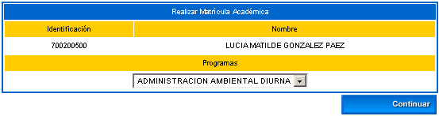
A continuación se muestra un ejemplo del contrato de matrícula, este caso se da cuando se ha activado la regla específica dentro de la parametrización del proceso de matrícula académica. El estudiante deberá dar clic sobre la opción Aceptar para darle continuidad al mismo.
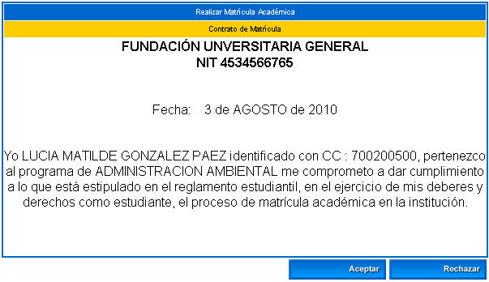
El presente contrato se habilita por el chequeo de un parámetro que se encuentra en la siguiente funcionalidad: Registro Académico / Matrícula Académica / Asociar reglas de matrícula académica, además debe estar activo en la funcionalidad de Gestionar reglas de matrícula académica.
Al desplegarse este contrato, el estudiante deberá dar clic en la opción Aceptar para dar inicio a su proceso de matrícula en línea, en caso contrario, no podrá empezar el registro de las asignaturas de su programa. En el siguiente ejemplo, el estudiante ya ha insertado 2 asignaturas. Dispone de las opciones: Matricular, Cambio de grupo y Horario estudiante.
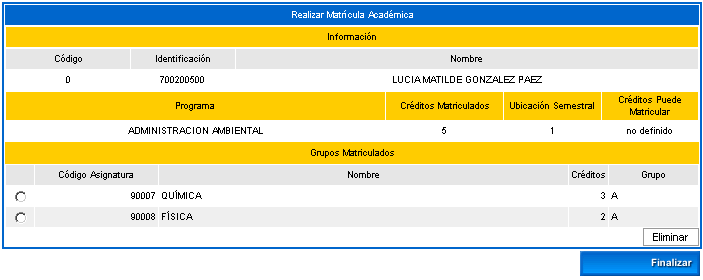
Esta funcionalidad le permite al estudiante registrar las materias del pensum del programa académico que ya tiene definidos los grupos, horarios y docentes. Para que el estudiante vea el listado de materias, previamente el usuario administrador del sistema tuvo que haber generado la demanda de las materias del Programa en el cual está inscrito el estudiante. Dispone de las opciones: Ver horario, Ver equivalencias y Registrar.
Cuando el estudiante está seguro de la asignatura que va a matricular, la selecciona y luego da clic sobre la opción Registrar.
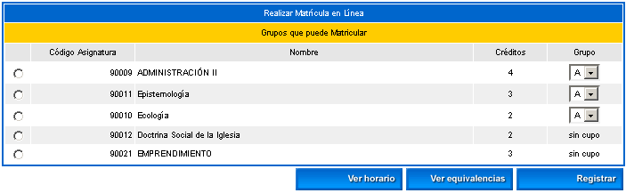
Si el estudiante desea Ver horario, debe seleccionar una de las materias, luego dar clic en esta opción. Se despliega una interfaz que muestra los datos organizados por días de la semana, visualiza el docente, el recurso (salón, laboratorio, entre otras), la hora de inicio y fin de la clase, y el lapso de tiempo asociado al periodo académico. Si todavía no tiene docente asignado aparecen las iniciales NDOC. Si no tiene recurso físico asignado para la clase aparecen las iniciales NRF.
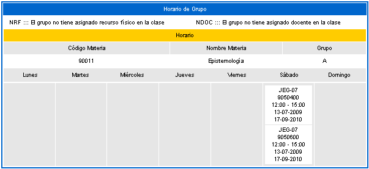
Si el estudiante desea Ver equivalencias, debe seleccionar una de las materias, luego dar clic en esta opción. Se despliega una interfaz que muestra un listado de las materias equivalentes, de las cuales puede seleccionar del combo el grupo Ver horario e incluirla dando clic sobre la opción Registrar.
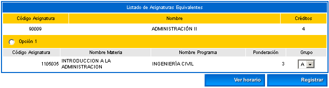
Esta opción permite que el estudiante consulte el horario de las materias equivalentes.
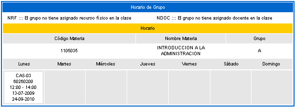
Esta funcionalidad le permite al estudiante, si así lo desea, cambiar el grupo de las materias ya matriculadas. Para realizar este cambio previamente debe tener seleccionado la materia. Dispone de las opciones: Ver horario y Registrar.
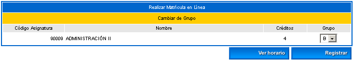
Esta opción permite que el estudiante consulte el horario del otro grupo de la materia que desea modificar.
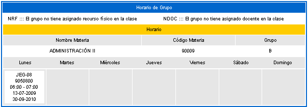
Esta funcionalidad le permite al estudiante ver el horario de las materias que ha matriculado.
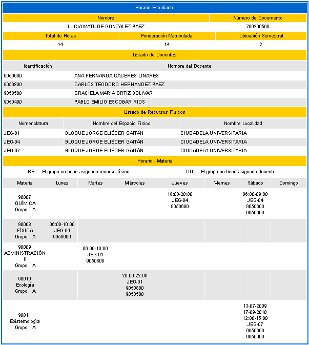
Opción Imprimir: Permite que se genera una impresión en formato pdf del horario del estudiante, tal como se muestra en la siguiente imagen.
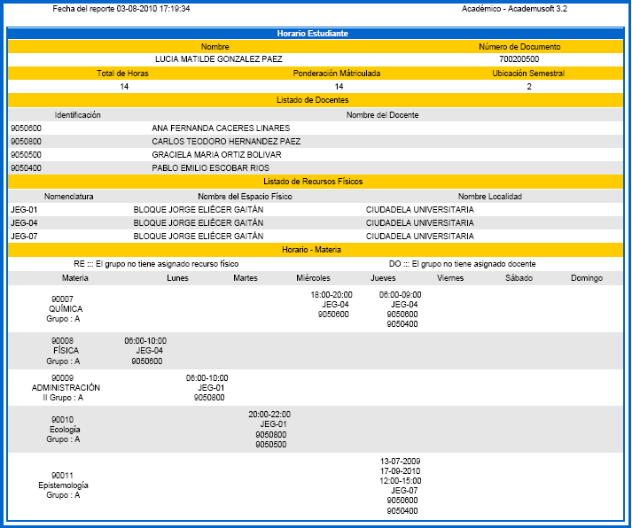
Al finalizar el proceso completo de Matrícula Académica en Línea, el sistema despliega un formato que identifica el total de materias que el estudiante ha registrado, tal como se muestran en la siguiente imagen:
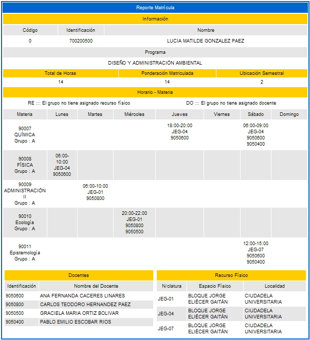
Opción Imprimir: Permite que se genera una impresión en formato texto del horario final del estudiante, tal como se muestra en la siguiente imagen:
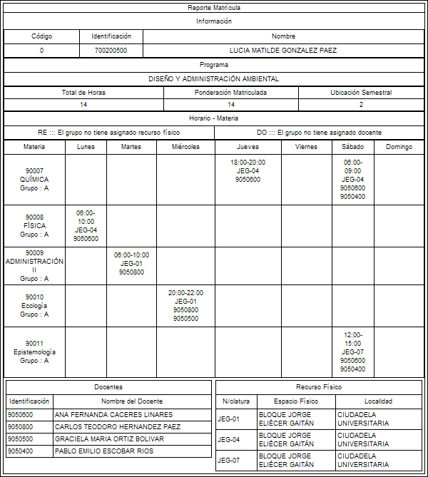
6. CONSULTAR MATRÍCULA ACADÉMICA
Esta funcionalidad le permite al estudiante consultar su matrícula académica. Podrá verificar las materias que ya tiene matriculadas en su periodo académico y confirmar cuáles deberá registrar en la matrícula en línea o incluirlas en la fase de Inclusión y Cancelación. El estudiante ingresa al aplicativo a través de su campus con un usuario y contraseña específica, selecciona esta funcionalidad, luego elige el programa de su interés, finalmente da clic sobre la opción Continuar.
Se despliega una interfaz que muestra las materias, sus códigos, grupo, horas prácticas, teóricas y créditos que tiene matriculadas el estudiante en el presente periodo académico.
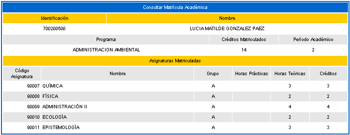
Esta funcionalidad le permite al estudiante consultar el horario de las materias matriculadas. Puede ver las clases asignadas por días de la semana, la referencia del salón y el código del docente. El alumno debe elegir el programa y luego dar clic sobre la opción Continuar.
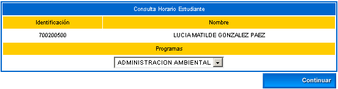
Se despliega una interfaz que le muestra en forma organizada cada materia matriculada, la clase asignada por cada día de la semana, el rango de horas de cada clase, y el salón asignado.
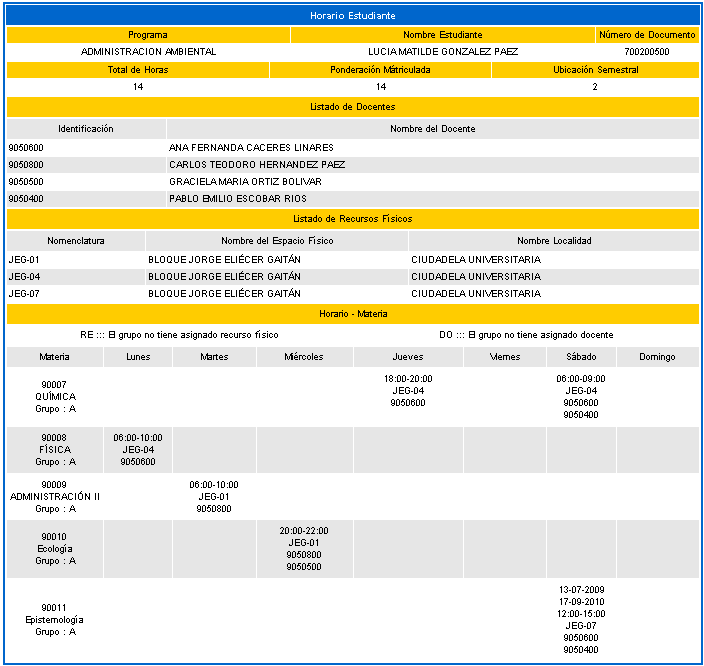
Opción Imprimir: Permite que se genera una impresión en formato pdf del horario del estudiante, tal como se muestra en la siguiente imagen.
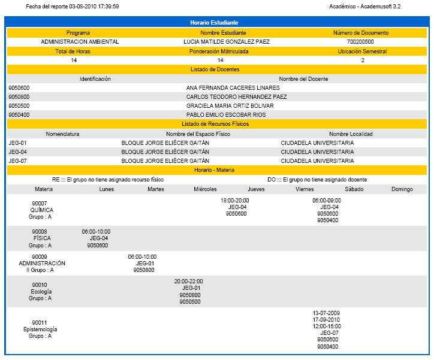
Esta funcionalidad le permite al estudiante realizar consultas en línea de las notas que ha obtenido en el semestre actual que está cursando y las notas que lleva acumuladas en toda su trayectoria académica. La consulta la hace por cada uno de los programas que esté cursando. Dispone de las funcionalidades: Consultar notas actuales y Consultar Registro extendido.
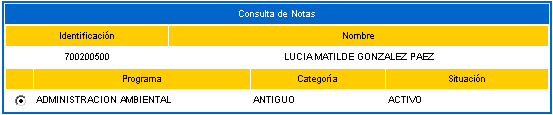
Esta funcionalidad le permite al estudiante consultar las notas de las materias matriculadas en su actual periodo académico. Debe seleccionar una de las materias y luego dar clic sobre la opción Continuar. Dispone de la opción Imprimir.
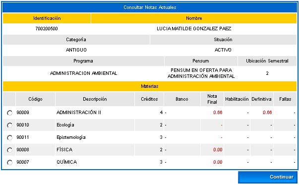
Opción Imprimir: Permite que se genera una impresión en formato pdf de las calificaciones del estudiante y el valor acumulado de las mismas, tal como se muestra en la siguiente imagen:
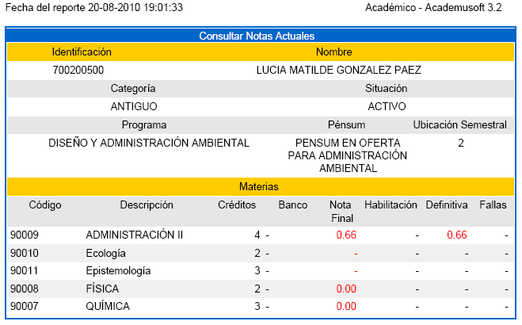
Cuando el estudiante ha elegido una de las asignaturas, el sistema despliega una interfaz en la cual se puede visualizar el detalle de las notas obtenidas en cada una de las evaluaciones. Dispone de la opción Imprimir.
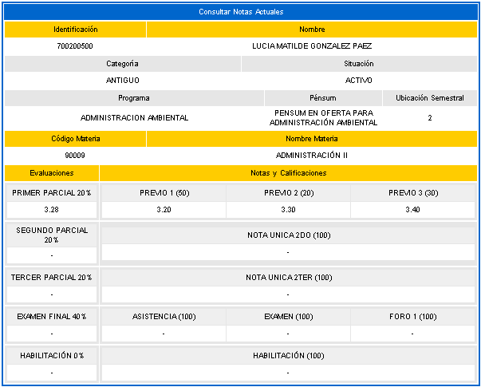
Opción Imprimir: Permite que se genera una impresión en formato pdf de las notas del estudiante, tal como se muestra en la siguiente imagen.
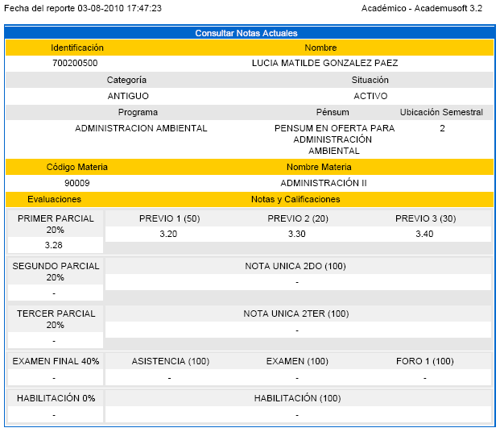